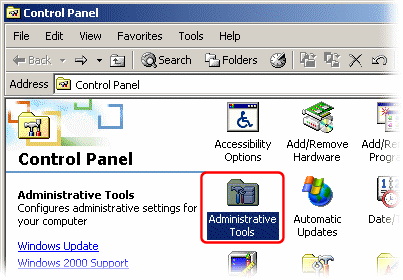
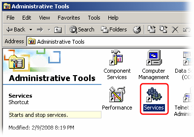
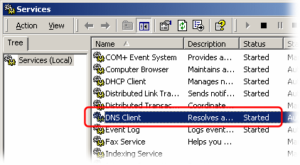
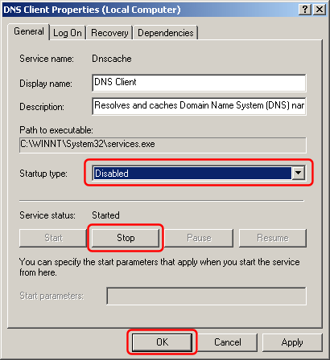

Windows 2000 and later have a "DNS Client" service which is enabled by default.
This service caches DNS lookups for the local computer only. This potentially saves a bit of bandwidth and makes DNS lookups a bit faster by preventing DNS lookups from being sent over the Internet connection if the same data has recently been requested on this same computer.
However, if you are running Simple DNS Plus (which also caches DNS lookups) on a computer on the local network, then there is nothing gained by also running this service on local computers - it will only use extra resources to cache the same data again.
You will actually save both CPU power and memory by disabling the service on all the local computers.
Simple DNS Plus acts as a central DNS cache so that if two computers request the same domain name, only one external lookup is needed, and the DNS cache only takes up resources on one computer. This is much more efficient compared to each computer running its own DNS cache.
Disabling this service also reduces possible confusion about where cached DNS records might be coming from when trouble shooting DNS or other caching issues.
We recommend disabling the "DNS Client" service on all local computers including the one running Simple DNS Plus:
In the Windows Control Panel double click "Administrative Tools" (Control Panel below pictured in "Classic View"):

Double click on "Services":

Double click on the "DNS Client" service:

Select Startup type "Disabled", click the "Stop" button, and click "OK":

IMPORTANT: On recent Windows versions, the "DNS Client" service is also used to register the computer's network connection in DNS (sends a dynamic update creating a host record on the local DNS server).
If you need this functionality, then obviously you should not disable the "DNS Client" service.
The same functionality is however also available in many DHCP servers (including the plug-in for Simple DNS Plus), making it unnecessary for the client computer to do this itself.